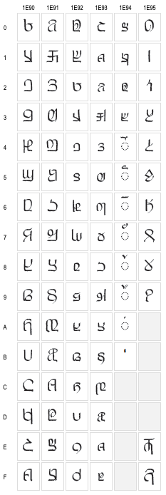
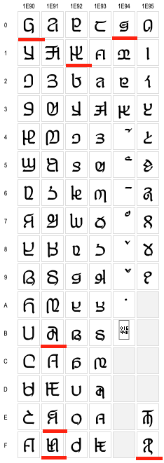
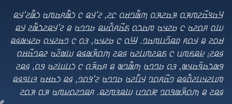
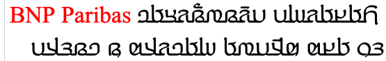
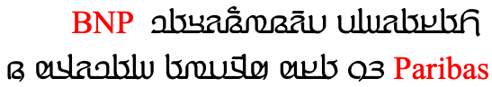
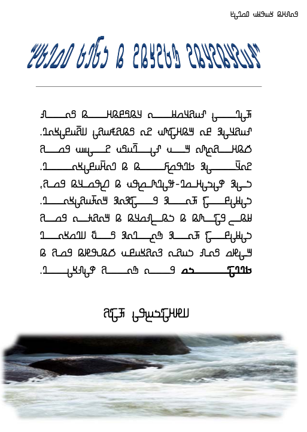
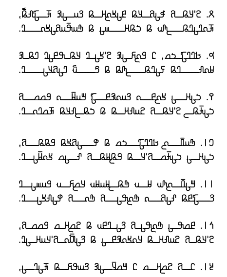
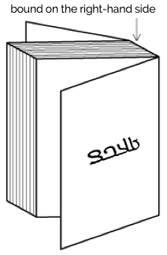
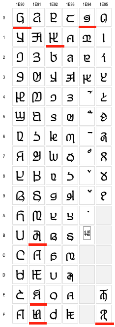
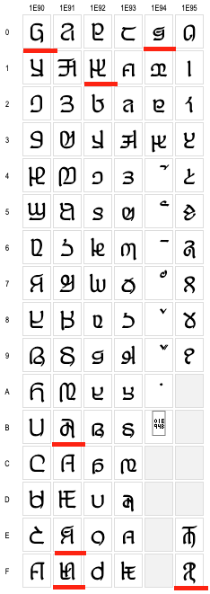

This page gathers together basic information about the Adlam script and
its use for the Pular language. It aims (generally) to provide an
overview of the orthography and typographic features, and (specifically)
to advise how to write Pular using Unicode.
The Noto Sans font used for joined text is not yet available
from the Noto site. The Noto Sans Unjoined font used for
Adlam text on this page is largely based on an older set of shapes for
Adlam letters. For more information see variants.
The Adlam script was devised in the 1980s, and is nowadays used for
writing the Fulani language, alongside Latin and Arabic orthographies.
It is currently taught in Guinea, Nigeria, Liberia and other nearby
countries.
Pular or Pulaar is the way the Fula people refer to their language in
western dialects. In central and eastern dialects it is Fulfulde. The
English names Fula(h) and Fulani originally come from Manding and Hausa,
respectively. Sometimes the French name Peul (from Wolof) can be found.
The spread of the script is occurring remarkably rapidly across the
whole Pular/Fulfulde-speaking world, through a grass-roots movement. The
new script appeals to Pular speakers, and its use is having a positive
impact on general literacy among them.
Name: 𞤀𞤣𞤤𞤢𞤥 𞤆𞤵𞤤𞤢𞤪Adlam
Pular
The script was developed by two teenage brothers, Ibrahima and
Abdoulaye Barry, so that their language could have its own script. The
name of the script ‘Adlam’ reflects the first four characters in the
repertoire: A, D, L, and M.
After teaching their own family and local villagers to use the script
for lessons in water hygiene and basic medical care, the brothers set up
learning centres in Togo, Senegal, and Benin. Eventually, the means were
available to print the script, and a newspaper and a number of printed
books were published.
The shapes of the glyphs used has evolved over time, and various
changes were standardised in 2019, however some fonts have not yet
caught up with these changes.
In 2019 the design of Adlam letter glyphs was overhauled in a
proposal to the Unicode Consortium, which resulted in changes to the
code chart. p

Glyphs in the Unicode Adlam code chart showing pre-2019
(left) and post-2019 (right) shapes. Click
to also show shapes produced by the Noto Sans Adlam font at the
start of 2020.. Red underlines highlight some characters that don't
resemble either of the other charts..
Typical changes involved standardising the shapes across cursive
forms, better distinctions between lower and uppercase forms, removal
of some ascenders to avoid diacritic collisions, and then addition of
some small ascenders to help distinguish joined forms.
There were also some significant shape changes, particularly to make
supplementary letters look more like those used for similar, standard
sounds, or to make letters easier to read.
Although there are not many Adlam Unicode fonts, and they will be
changed, legacy forms are likely to persist for some time alongside
the new forms.
The 2017 release of the Noto Sans Adlam font (still in use in 2020)
contains a set of glyphs that sometimes match one or other of the
shapes shown in variant_shapes, and sometimes
use completely different shapes from either. An updated version of the
font was expected with the release of Unicode v13.
The Adlam script is an alphabet.
Both consonants and vowels are indicated by letters. See the table to
the right for a brief overview of features for the Pular language. (See
the key. Character counts
exclude ASCII characters.)
The following list describes some distinctive characteristics of the
Adlam script.
The text direction is right-to-left and, unlike Arabic, numbers are
also written right-to-left.
The script can be written cursively or not. Non-joining fonts may
be used for titles, etc.
The script is bicameral.
Text direction
Adlam text is written horizontally, with successive lines progressing down the page.
Inline text is right-to-left in the main but, as in most right-to-left scripts, embedded left-to-right script text are written left-to-right (producing 'bidirectional' text). However, like N'Ko but unlike Arabic, numbers are also written with digits in
right-to-left order.
Adlam-script words are read right-to-left, starting from the right of this line, but 'BNP Paribas' is read left-to-right. The number 𞥑𞥙𞥘𞥕 (1985) on the other hand is written right-to-left.
The Unicode Bidirectional Algorithm automatically takes care of the ordering for all the text in fig_bidi, as long as the 'base direction' is set to RTL. In HTML this can be set using the dir attribute, or in plain text using formatting controls.
If the base direction is not set appropriately, the directional runs will be ordered incorrectly as shown in fig_bidi_no_base_direction.
𞤑𞤮𞤲𞤮 𞤳𞤮 𞤫 𞤬𞤫𞤣𞥆𞤫 PAIGC 𞤮 𞤶𞤫𞤴𞤢𞥄.
𞤑𞤮𞤲𞤮 𞤳𞤮 𞤫 𞤬𞤫𞤣𞥆𞤫 PAIGC 𞤮 𞤶𞤫𞤴𞤢𞥄.
The exact same sequence of characters with the base direction set to RTL (top), and with no base direction set on this LTR page (bottom).
Unicode provides a set of 10 formatting characters that can be used to control the direction of text when displayed. These characters have no visual form in the rendered text, however text editing applications may have a way to show their location.
More recently, the Unicode Standard added a set of characters which do the same thing but also isolate the content from surrounding characters, in order to avoid directional spillover effects. They are RLI [U+2067 RIGHT-TO-LEFT ISOLATE], LRI [U+2066 LEFT-TO-RIGHT ISOLATE], and PDI [U+2069 POP DIRECTIONAL ISOLATE]. The Unicode Standard recommends that these be used instead, however some applications don't yet recognise them.
There is also FSI [U+2068 FIRST STRONG ISOLATE], used initially to set the base direction according to the first recognised strongly-directional character.
The right-to-left orientation of the script affects the direction of page layout, and of the layout of items within the page. See also book direction.
The page shown in fig_layout is the mirror-image of pages in, say, French. Note the various navigation items on the page, and the progression of numbers at the bottom of the page.
An Adlam web page, where the layout and navigational aids are also ordered right-to-left.
On the other hand, the video controls assume a LTR direction. This is mostly constrained by technology at the moment, and whether or not this is acceptable is still being debated.
Character lists show:
Vowels
Vowel sounds
Click on the sound groups to see where else in
the document each of the sounds are referred to.
Short i e o u vowel sounds can also be realized as ɪ ɛ ɔ ʊ.w
Vowel to script mapping
The following tables show how the above vowel sounds map to common characters or sequences of characters. The sections that follow this provide additional information.
The latest glyph reform introduces visual differences between the
shapes of the vowel lengthener (and to a lesser extent, the alif
lengthener) above upper vs lowercase letters.→p
These differences can be seen in the list just above.
The 𞥊
[U+1E94A
ADLAM NUKTA] used to distinguish sounds e and o normally
appears above the base letter, but when the sound is lengthened the
diacritic should appear below the base character, while the
lengthening mark appears above, eg. 𞤫𞥊𞥅ɛ˙ːeː and 𞤮𞥊𞥅ɔ˙ːoː. The nukta should be typed and
stored before the lengthening mark.
Vowel absence
No special mechanism is used to indicate the absence of a vowel.
Click on the sounds to see where else in the
document they are referred to.
labial
dental
alveolar
post-
alveolar
palatal
velar
uvular
pharyneal
glottal
stop
pb ɓ
td tˤdˤ ɗ
kɡ k͡pg͡b
q
ʔ ʔʲ
affricate
t͡ʃd͡ʒ
fricative
fv
θ
sz sˤzˤ
ʃ
xɣ
ʕ
hɦ
nasal
m
n
ɲ
ŋ
approximant
w
l
j
trill/flap
r
Sourcewp. Phones
in a lighter colour are non-native or allophones.
Consonant to script mapping
The following tables show how the above consonant sounds map to common characters or sequences of characters. The sections that follow this provide additional information.
A set of supplementary letters are used for loan words and proper
nouns originated in neighbouring ethnic groups.
𞤾𞤜␣𞤿𞤝␣𞥀𞤞␣𞥁𞤟␣𞥂𞤠␣𞥃𞤡
Glottal stop
When a consonant is followed immediately by a glottal stop and then a
vowel Adlam uses the diacritic 𞥇 [U+1E947 ADLAM HAMZA] over the
preceding consonant to indicate the glottal stop, eg. 𞤗𞤵𞤪𞥇𞤢𞤲Qurʿan.e2
Non-native sounds
Adlam has 3 diacritics for extending letters to cover non-native
sounds (principally Arabic). 𞥈 [U+1E948 ADLAM CONSONANT MODIFIER]
and 𞥊
[U+1E94A
ADLAM NUKTA] are the basic characters. They
are shown here with lowercase letters.
Pre-nasalised consonants are indicated by adding 𞥋 [U+1E94B ADLAM NASALIZATION MARK]
between NA and the consonant affected, eg.
𞤸𞤭𞤲𞥋𞤣𞤵hin˜du (hi.ndu)
it vs 𞤸𞤭𞤲𞤣𞤵hindu (hin.du)
ancient. In word-initial
position, the same logic is applied, and so the word begins with 𞤲𞥋.
This character was added to Unicode version 12. Prior to that, people
used an apostrophe, but that doesn't produce the needed effect.
If it appears between two letters that would normally join, the
nasalisation character should not break that join.
As mentioned in the previous section, however, letters that have
consonant modifier diacrtics use a special code point, 𞥉 [U+1E949 ADLAM GEMINATE CONSONANT MODIFIER]
that combines the gemination marker with the modifier.
Letters that combine with 𞥊 [U+1E94A ADLAM NUKTA] should move
that diacritic below the base character and keep the gemination mark
above, eg. 𞤧𞥊𞥆s˙˖The Noto Sans font doesn't support that behaviour.
The latest glyph reform introduces small differences between the
shapes of the gemination mark above upper vs lowercase letters.→p
The Adlam block contains the following punctuation marks.
𞥟␣𞥞
See phrase for details.
The shapes of these punctuation marks was significantly changed in the
2019 shape reform, with the aim of making them more visually appealing.
In addition to Western punctuation, Adlam also uses the following
punctuation marks.
؟␣⁏␣⹁
The question mark, ؟ [U+061F
ARABIC QUESTION MARK], is from the Arabic block,
but the comma and semicolon are ⹁ [U+2E41 REVERSED COMMA] and ⁏ [U+204F
REVERSED SEMICOLON], respectively, rather than
the Arabic comma and semicolon. (The Arabic comma/semicolon are only
used as carryovers from the older Adlam fonts.)n
Symbols
The Adlam block has no symbols.
Formatting characters
Observation: It's not
clear which formatting characters are used for Adlam, other than the
likely use of ZWJ for educational purposes.
Numbers
Digits
Adlam uses native digits.
𞥐␣𞥑␣𞥒␣𞥓␣𞥔␣𞥕␣𞥖␣𞥗␣𞥘␣𞥙
However, unlike other right-to-left scripts such as Arabic, Hebrew,
Thaana, (but like N'Ko) the numbers are displayed right-to-left,
with the most significant digit first.e
This means that numbers don't produce bidirectional text in Adlam
The shape of the digit 6 was significantly changed by the 2019 glyph
shape reform to make it less similar to the letter HA.→p
For thousands and decimal separators, Adlam uses a space and a
period, respectively.n
Adlam is usually cursive, ie. letters in a word are joined up (see cursive and fig_joined_writing_style),
however a non-cursive writing style (see fig_unjoined_writing_style)
is sometimes used, mainly as display fonts for books and article
titles as well as educational content (because the unconnected script
is easier to learn).n
An unjoined writing style is used for titles and
educational content.
Cursive text
Fonts need to produce the appropriate joining form for a code point,
according to its visual context.
𞤱𞤢𞥄𞤱𞤲𞤣𞤫
𞤱𞤮𞤲𞤣𞤫 𞤬𞤮𞤬
Cursive connections. Note the small variation in initial
and final form of 𞤬.
The cursive treatment doesn't produce major variations of the
essential part of the glyph for a character (unlike Arabic), but there
are some small adaptations.
Unlike Arabic and Syriac scripts, no glyphs join only on one side.
Context-based shaping
See variants for information about recent
glyph shape changes.
Context affects the shapes of certain diacritics when placed over
upper vs lowercase letters.→p
Context-based positioning
𞥊
[U+1E94A
ADLAM NUKTA] usually sits above the letter it
modifies, but if the letter is also lengthened or geminated, it moves
below the letter and leaves the lengthening/gemination diacritic
above.
Font styles
The Kigelia font may be the first italicised Adlam tyeface, but its
development was based on requests from the community of users.
Discussion with the community led to an italic form that leans to the
right (unlike N'Ko).g

An example of an italic typeface for Adlam.
Baselines & inline alignment
tbd
Transforming characters
Adlam is bicameral, so it is useful to be able to convert
automatically between upper and lowercase characters.
Structural boundaries & markers
Grapheme boundaries
A grapheme is a user-perceived unit of text.
The Unicode Standard uses generalised rules to define 'grapheme
clusters', which approximate the likely grapheme boundaries in a
writing system.
tbd
Word boundaries
The concept of 'word' is difficult to define
in any language (see What
is a word?). Here, a word is a vaguely-defined, but recognisable
semantic unit that is typically smaller than a phrase and may comprise
one or more syllables.
Adlam words are separated by spaces.
Phrase & section boundaries
𞥟
[U+1E95F
ADLAM INITIAL QUESTION MARK] and 𞥞 [U+1E95E ADLAM INITIAL EXCLAMATION MARK]
are used to begin a phrase that is a question or exclamation,
respectively, much like ¿ and ¡ in Spanish. The phrase ends using an
Arabic question mark or ASCII exclamation mark, eg. 𞥟 𞤢𞤤𞤢𞥄 ؟¿ alaˉ ?no?and
𞥞
𞤢𞤤𞤢𞥄 !¡ alaˉ !no!.e2
The punctuation marks appear to be separated from the rest of
the text by a space.
In addition to ASCII punctuation, Adlam also uses the following
punctuation marks.
The Unicode Bidirectional Algorithm automatically assigns the glyphs to these code points depending on the direction of the surrounding text, you should use them as if they were named 'start' and 'end', rather than 'left' and 'right', respectively. They are referred to as 'mirrored' punctuation.
𞤣𞤢𞤪𞤭𞥅𞤩𞤫 𞥒𞥙 (𞤲𞤮𞥅𞤺𞤢𞤴 𞤫 𞤶𞤫𞥅𞤲𞤢𞤴𞤮) 𞤲𞤺𞤢𞤥
In this text sample, the parenthesis on the right is U+0028 LEFT PARENTHESIS, and the one on the left is U+0029 RIGHT PARENTHESIS.
The same applies for other paired brackets used in Unicode-based text.
Quotations
tbd
Observation: Adlam text appears to use quote marks “ [U+201C LEFT DOUBLE QUOTATION MARK] at the start, and ” [U+201D RIGHT DOUBLE QUOTATION MARK] at the end. Note that these characters are not mirrored during display. This means that left indicates use on the left, and right indicates use on the right, unlike other types of paired punctuation.
Emphasis
tbd
Abbreviation, ellipsis & repetition
tbd
Observation: Adlam text appears to use the 3-dot ellipsis. Unicode has … [U+2026 HORIZONTAL ELLIPSIS] for that.
Other punctuation
tbd
Inline notes & annotations
tbd
Line & paragraph layout
Line breaking & hyphenation
tbd
Adlam text breaks primarily at the spaces around words.
Breaking between Latin words. When a line break occurs in the middle of an embedded left-to-right sequence, the items in that sequence need to be rearranged visually so that it isn't necessary to read lines from top to bottom.
latin-line-breaks shows how two Latin words are apparently reordered in the flow of text to accommodate this rule. Of course, the rearragement is only that of the visual glyphs: nothing affects the order of the characters in memory.


The lower of these two images shows the result of decreasing the line width, so that text wraps between a sequence of Latin words.
Character properties
Characters used for the Pula language have the following
assignments related to line-break properties.
AL
(ordinary alphabetic and symbol characters) requires other
characters to provide break opportunities; otherwise, unless
tailored rules are applied, no line breaks are allowed between
pairs of them.
BA
(break after) indicates that it is normal to break after
that character.
NU
(number) behaves like ordinary characters (AL) in the
context of most characters but activate the prefix and postfix
behavior of prefix and postfix characters.
OP
(open punctuation) should be kept with the character that
follows. This is desirable, even if there are intervening space
characters, as it prevents the appearance of a bare opening
punctuation mark at the end of a line.
Text alignment & justification
tbd
Observation: The Winden Jangen site has scans of a number of books which apply full justification. The method of justification appears to be elongation of the baseline, with no affect on the inter-word spacing. See fig_justification. In narrow columns this can produce some exaggerated stretching, as seen in fig_justification_wide. There are many passages in the samples available that apply this exaggerated stretching. Some content also applies justification to the last line in a paragraph, which sometimes produces even wider elongations.
Full justification achieved by stretching baselines.

Full justification achieved by stretching baselines.
Letter spacing
tbd
Counters, lists, etc.
tbd
Observation: The Winden Jangen site has scans of a number of books which use ordered lists, and they use Adlam numbers (see fig_cs_numeric).

Numeric counter styles.
Styling initials
tbd
Page & book layout
General page layout & progression
tbd
Pular books, magazines, etc. written using the Adlam script are bound on the right-hand side, and pages progress from right to left.

Binding configuration for Adlam books, magazines, etc.
Columns are vertical but run right-to-left across the page.
Grids & tables
tbd
Notes, footnotes, etc
tbd
Forms & user interaction
tbd
Page numbering, running headers, etc
tbd
Character lists
Version 12.0 of the Unicode Standard has the following block dedicated
to the Adlam script (numbers in lists are non-ASCII only):
 
